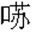

今年的所谓“文人相轻”，不但是混淆黑白的口号，掩护着文坛的昏暗，也在给有一些人“挂着羊头卖狗肉”的。
真的“各以所长，相轻所短”的能有多少呢！我们在近几年所遇见的，有的是“以其所短，轻人所短”。例如白话文中，有些是诘屈难读的，确是一种“短”，于是有人提了小品或语录，向这一点昂然进攻了，但不久就露出尾巴来，暴露了他连对于自己所提倡的文章，也常常点着破句[274]，“短”得很。有的却简直是“以其所短，轻人所长”了。例如轻蔑“杂文”的人，不但他所用的也是“杂文”，而他的“杂文”，比起他所轻蔑的别的“杂文”来，还拙劣到不能相提并论[275]。那些高谈阔论，不过是契诃夫（A.Chekhov）所指出的登了不识羞的顶颠，傲视着一切[276]，被轻者是无福和他们比较的，更从什么地方“相”起？现在谓之“相”，其实是给他们一扬，靠了这“相”，也是“文人”了。然而，“所长”呢？
况且现在文坛上的纠纷，其实也并不是为了文笔的短长。文学的修养，决不能使人变成木石，所以文人还是人，既然还是人，他心里就仍然有是非，有爱憎；但又因为是文人，他的是非就愈分明，爱憎也愈热烈。从圣贤一直敬到骗子屠夫，从美人香草一直爱到麻疯病菌的文人，在这世界上是找不到的，遇见所是和所爱的，他就拥抱，遇见所非和所憎的，他就反拨。如果第三者不以为然了，可以指出他所非的其实是“是”，他所憎的其实该爱来，单用了笼统的“文人相轻”这一句空话，是不能抹杀的，世间还没有这种便宜事。一有文人，就有纠纷，但到后来，谁是谁非，孰存孰亡，都无不明明白白。因为还有一些读者，他的是非爱憎，是比和事老的评论家还要清楚的。
然而，又有人来恐吓了。他说，你不怕么？古之嵇康，在柳树下打铁，钟会来看他，他不客气，问道：“何所闻而来，何所见而去？”于是得罪了钟文人，后来被他在司马懿面前搬是非，送命了[277]。所以你无论遇见谁，应该赶紧打拱作揖，让坐献茶，连称“久仰久仰”才是。这自然也许未必全无好处，但做文人做到这地步，不是很有些近乎婊子了么？况且这位恐吓家的举例，其实也是不对的，嵇康的送命，并非为了他是傲慢的文人，大半倒因为他是曹家的女婿，即使钟会不去搬是非，也总有人去搬是非的，所谓“重赏之下，必有勇夫”者是也。
不过我在这里，并非主张文人应该傲慢，或不妨傲慢，只是说，文人不应该随和；而且文人也不会随和，会随和的，只有和事老。但这不随和，却又并非回避，只是唱着所是，颂着所爱，而不管所非和所憎；他得像热烈地主张着所是一样，热烈地攻击着所非，像热烈地拥抱着所爱一样，更热烈地拥抱着所憎——恰如赫尔库来斯（Hercules）的紧抱了巨人安太乌斯（Antaeus）一样，因为要折断他的肋骨[278]。
五月五日。
注 释
[273] 本篇最初发表于1935年6月《文学》月刊第四卷第六号“文学论坛”栏，署名隼。
[274] 指林语堂。他在《论语》第二十六期（1933年10月）的《论语录体之用》一文中说：“吾恶白话之文，而喜文言之白，故提倡语录体。……盖语录简练可如文言，质朴可如白话，有白话之爽利，无白话之噜

。……白话文之病，噜哩噜。”但他在《新语林》创刊号（1934年7月）的《论个人笔调》一文中，却将引文“有时过客题诗，山门系马；竟日高人看竹，方丈留鸾。”错点为：“有时过客题诗山门，系马竟日；高人看竹，方丈留鸾。”[275] 指林希隽，参看本书《徐懋庸作〈打杂集〉序》及其注〔5〕。
[276] 这句话见于契诃夫的《随笔》。
[277] 关于钟会访嵇康事，见《晋书·嵇康传》：“初，康居贫，尝与向秀共锻于大树之下，以自赡给。颍川钟会，贵公子也，精练有才辩，故往造焉。康不为之礼，而锻不辍。良久会去，康谓曰：‘何所闻而来，何所见而去？’会曰：‘闻所闻而来，见所见而去。’会以此憾之。及是，言于文帝曰：‘……公无忧天下，顾以康为虑耳。……宜因衅除之，以淳风俗。’帝既昵听信会，遂并害之。”钟会（225—264），字士季，颍川长社（今河南长葛）人。司马昭的重要谋士。魏常道乡公景元三年（262）拜镇西将军，次年统兵伐蜀，蜀平后谋反，被杀。文中司马懿应为司马昭。
[278] 赫尔库来斯紧抱巨人安太乌斯 据古希腊神话：赫尔库来斯是主神宙斯的儿子，神勇有力。安太乌斯是地神盖娅的儿子，他只要靠着地面，就力大无穷。在一次搏斗中，赫尔库来斯把安太乌斯紧紧抱起，使他脱离地面，而扼死了他。